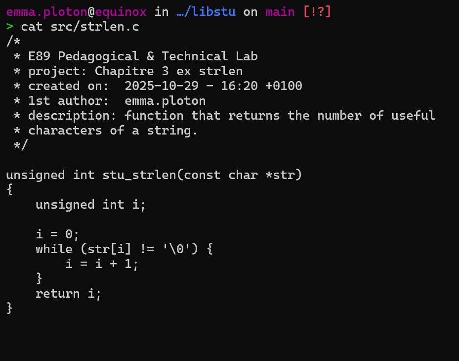

Re-code de petites fonctions
Série d’exercices en langage C visant à re‑coder plusieurs fonctions de la bibliothèque standard, comme strlen, puts, etc... Ces exercices ont été réalisés en respectant une norme stricte de mise en forme afin de pouvoir réutiliser ces fonctions dans de futurs projets.

 Retour
Retour